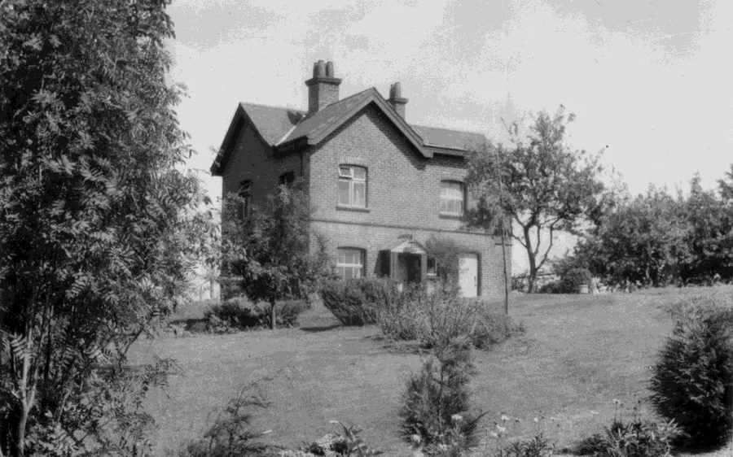
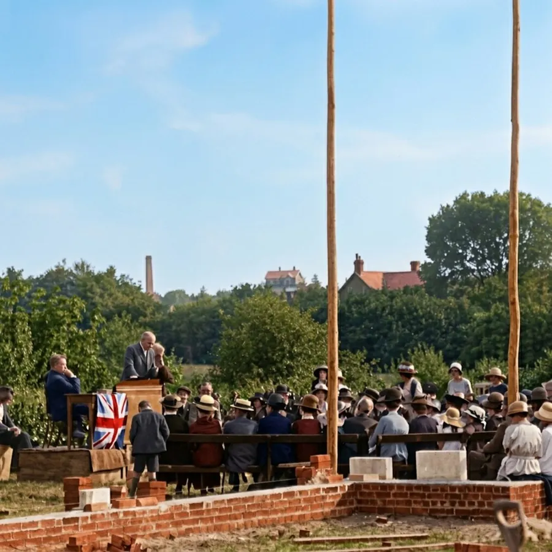
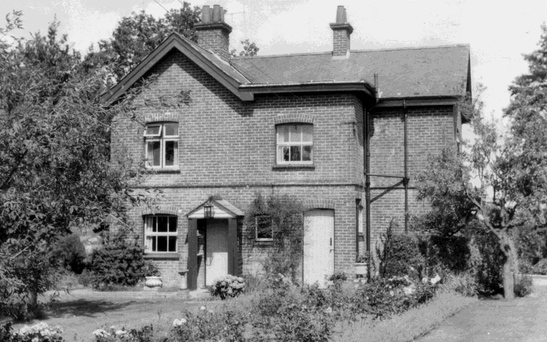
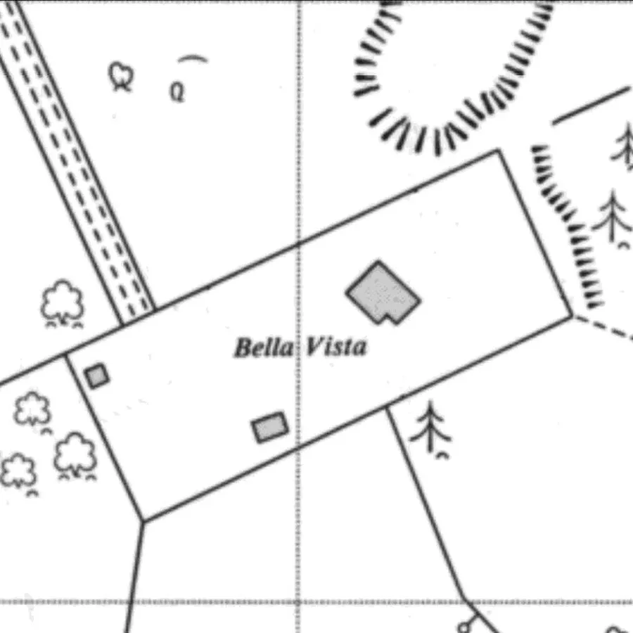
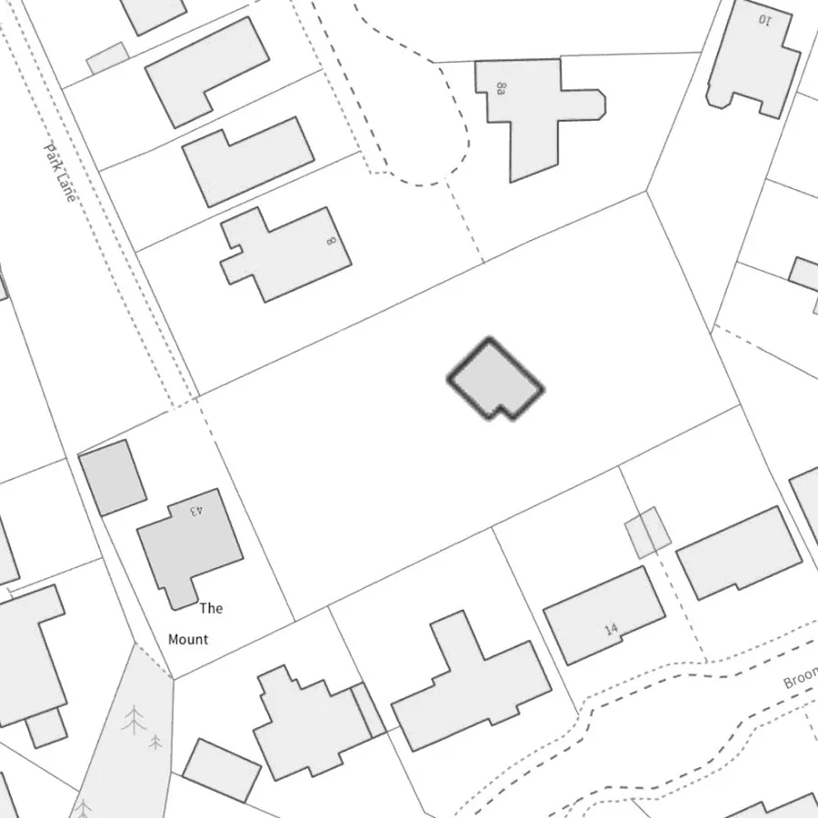
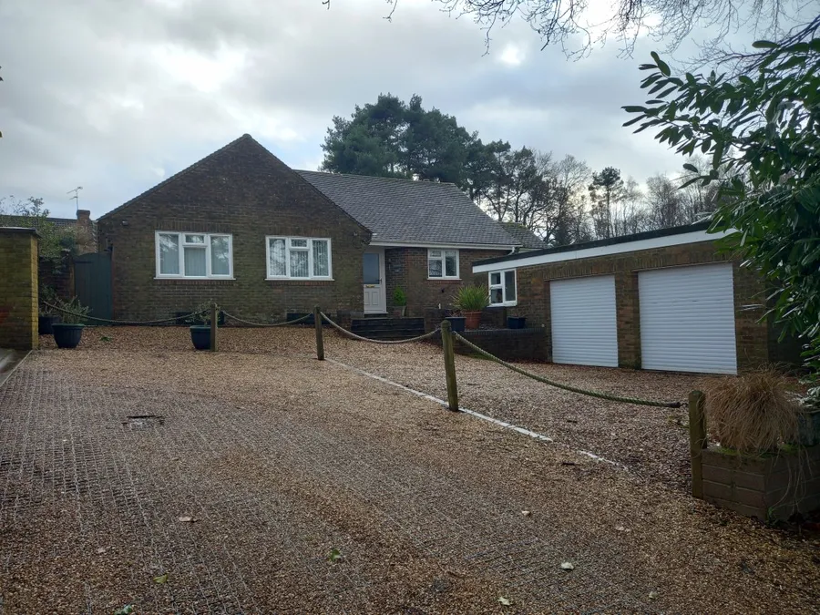
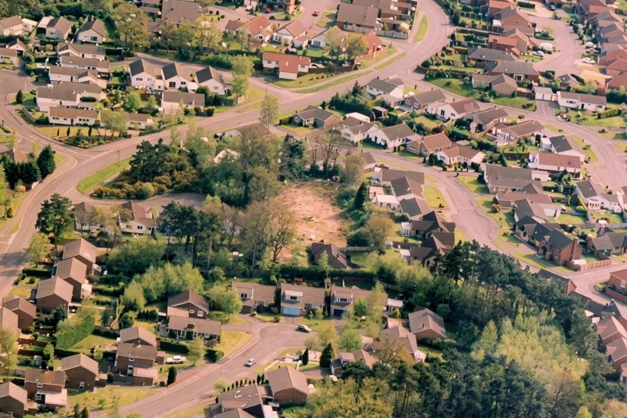
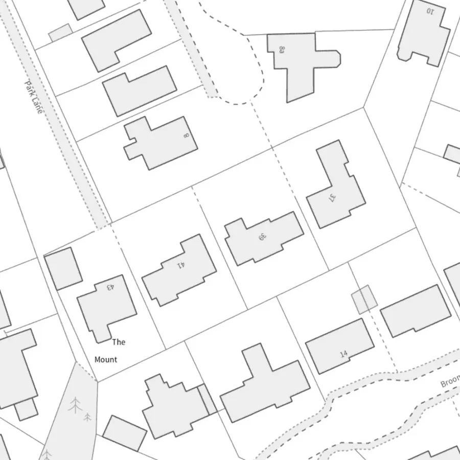
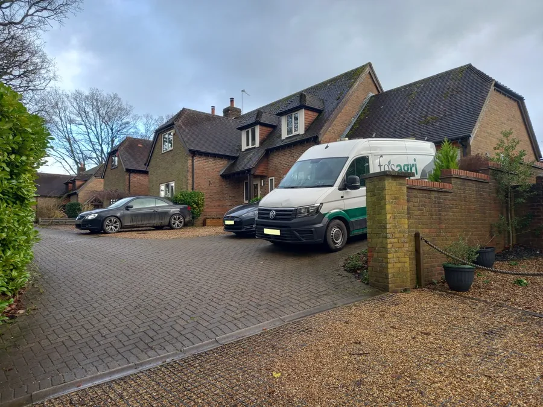

Bella Vista — The Story of a House
by Adrian King

Bella Vista was a substantial property on a ridge overlooking the village. It was at the very end of Park Lane where tarmac now becomes gravel. Bella Vista means beautiful or nice view.

The property was visible in the Alderholt Congregational Church picture of the stone laying on 2nd July 1923. The Camel Green Brickyard Chimney was in the same picture.

The house was probably built for Herbert Thomas Shannon Rake (1891–1951). His parents set him up at the Camel Green Brickworks after he was invalided out of the 7th Battalion Hampshire Regiment through being gassed on the 17th Nov 1914.
Shannon Rake lived there in that elevated site above the Brickyard from 1915 to 1931. Shannon Rake married Margaret Hussey (1896–1948) in July 1921 and they had three children.
- Derek Shannon Vaughan (1922-2021)
- Margaret Winifred (1925-1982)
- Dorothy Jean (1932-1993)
But the life of relative luxury ended in 1929 when the business failed and the family had to move to a modest bungalow, Fernlea, on Camel Green Road.

After a crammer, Derek Shannon Vaughan Rake passed his 11-plus exam and attended Wimborne Grammar School becoming Head Boy and doing well at sport. He didn't want to follow the family tradition of medicine but instead volunteered for the RAF in 1941. After the war he remained in the RAF reaching Group Captain, OBE, AFC, and Bar during the Cold War.
After the Rakes
Hilda Lilian Gollins (born 4th Oct 1902) was living there with her son Osmond (born 10th May 1927) as recorded in NR1939*. Her trade was a poultry keeper. Hilda Gollins had moved to Stroud, Gloucestershire by 1947.

Around 1980 Mr D L Randall received planning permission to Develop land by erection of dwelling. Application ref 03/79/1571/HST was granted on 31st Aug 1979 and a second, 03/79/2280/HST was granted on 21st Dec 1979.
A bungalow, now The Mount 43 Park Lane, was built on a plot to the right as Park Lane enters the plot. It resold for £135,000 on 15th Oct 1999 and £350,000 on 25th Feb 2015.


Mr D L Randall also received planning permission to erect an Extension to dwelling. Application ref 03/82/0867/HST was granted 28th May 1982 and this was probably for Bella Vista. On 28th Jan 1983 he was granted planning permission to erect a Semi-bungalow on a plot adjacent to Bella Vista. Application ref 03/82/2211/HST was probably never built.
By 1989 Benhill Developments owned the property. The first application ref 03/89/0113/FUL to Demolish existing house and erect six flats and two bungalows was refused on 12th Jul 1989. The second application ref 03/90/0391/FUL to Demolish existing dwelling and erect three chalet style dwellings was granted on 9th Jul 1990.
At this point Bella Vista must have been demolished.
But then followed two more applications for the erection of six houses. Both these were refused ref 03/91/1138/FUL on 15th Jan 1992 and ref 03/92/0899/FUL on 13th Jan 1993.

Current Situation
A. J. Morrison Character Homes, Higher Holwell Farmhouse, Cranborne received planning permission on 14th Dec 1995 for Three detached chalet style dwellings with double garageref 03/95/0857/FUL.
So, with Bella Vista demolished, three dwellings were built in its place.

- Segen House 37 Park Lane was a new build and sold for £175,000 on 4th June 1997.
- 39 Park Lane was a new build and sold for £154,950 on 12th Feb 1997.
- 41 Park Lane was a new build and sold for £152,000 on 13th Dec 1996. It sold again for £440,000 on 24th Jul 2014 and £580,000 on 24th Feb 2021.

I am always looking for more information on the original building in particlular. If you have memories, photographs, documents, or anything else historical about Alderholt, whether they are already featured or not, we would be delighted to hear from you. Even small details can help build a more complete picture of Alderholt's past. Please get in touch if you can help add to, correct or expand this record for future generations.
* Date codes FA and NR are from Fordingbridge Almanac and the National Register respectively